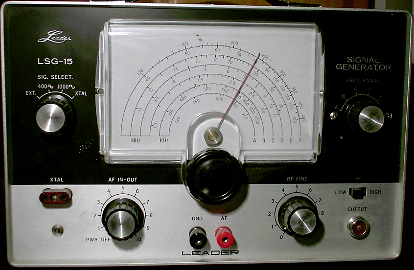
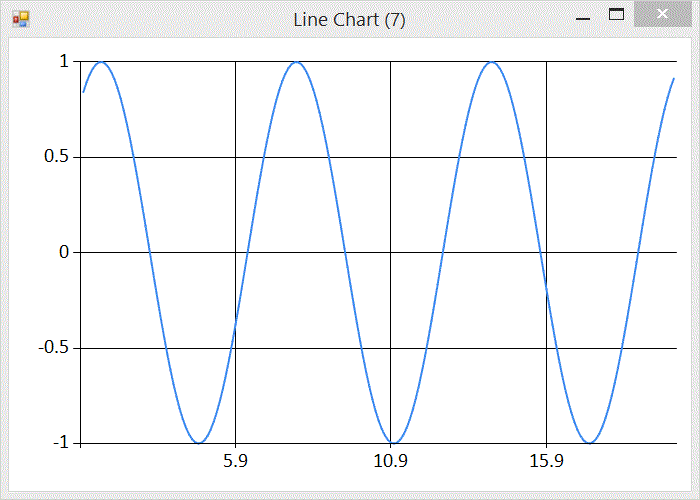

As part of a larger project I have been working on a signal generator. A signal generator is a device (in this case an F# program) that is often used to generate waves at a particular frequency that can be interpreted as sound (by applying to a speaker as a voltage).
For my project I want to generate pitches and then convert the signal to PCM audio data, wrapped in the windows WAVE file format. PCM format means that the signal is represented as a series of positive or negative values within a certain range. The number of samples per second is called the sample rate (44,100 for CD audio). The range of the values is governed by the bit depth, again I will stick with the CD audio standard 16 bit audio, giving me a range of -32768 to 32767.
Generating Signals
The simplest and purest representation of a particular frequency is given by a sine wave.

This graph was generated using FSharp.Charting and the following fsx file
#load "../packages/FSharp.Charting.0.90.7/FSharp.Charting.fsx"
open FSharp.Charting
let c = seq { for x in [1.0..0.1..20.0] do yield (x, sin x) } |> Chart.Line
Note that the wave has a range from -1 to 1 and a recurring regular frequency. But what is that regular frequency? The F# sin function operates on an angle given in radians. Experimenting in the F# repl (fsi) we can find that sin of PI radians is 0
> sin System.Math.PI;;
val it : float = 1.224606354e-16
Interesting. What about the sin of 2 PI radians?
> sin (2. * System.Math.PI);;
val it : float = -2.449212708e-16
Those accustomed to working with floating point numbers will recognise that anything x 10^-16 is floating points version of 0. So sin (n * PI) is 0. This tells us, or at least suggests, that the graph crosses the x axis every PI change in x. Now let’s look at mid-points between x intercepts:
> sin (1.5 * System.Math.PI);;
val it : float = -1.0
> sin (2.5 * System.Math.PI);;
val it : float = 1.0
> sin (3.5 * System.Math.PI);;
val it : float = -1.0
Half way between PI and 2 x PI the y value is -1. Half way between 2 x PI and 3 x PI the y value is 1. Half way between 3 x PI and 4 x PI the y value is back to -1, so we see that the graph repeats every 2 x PI.
Now we can start generating PCM data. First we need to list the samples we want to create:
let requiredSamples = seq { 1.0..(seconds * sampleRate) }
We need sampleRate samples for every second. Next we plot those points using the sin function, and scale them by the expected range for 16 bit audio.
let samples = Seq.map
(fun x -> x |> sin |> (*) 32767 |> int16)
requiredSamples
Now we have PCM audio samples that we can pack and send to an audio player for listening pleasure.
Packing PCM data into a WAVE File
The WAVE file format is a binary format defined as part of Microsoft’s RIFF specification. The details of the format are not very interesting. It has some headers that describe the format in use, and details of the audio data, such as sample rate, bit depth and number of channels. To encode 16 bit mono samples at 44,100the following is sufficient:
let pack (d:int16[]) =
let stream = new MemoryStream();
let writer = new BinaryWriter(stream, System.Text.Encoding.ASCII);
let dataLength = Array.length d * 2
// RIFF
writer.Write(System.Text.Encoding.ASCII.GetBytes("RIFF"))
writer.Write(Array.length d)
writer.Write(System.Text.Encoding.ASCII.GetBytes("WAVE"))
// fmt
writer.Write(System.Text.Encoding.ASCII.GetBytes("fmt "))
writer.Write(16)
writer.Write(1s) // PCM
writer.Write(1s) // mono
writer.Write(44100) // sample rate
writer.Write(44100 * 16 / 8) // byte rate
writer.Write(2s) // bytes per sample
writer.Write(16s) // bits per sample
// data
writer.Write(System.Text.Encoding.ASCII.GetBytes("data"))
writer.Write(dataLength)
let data:byte[] = Array.zeroCreate dataLength
System.Buffer.BlockCopy(d, 0, data, 0, data.Length)
writer.Write(data)
stream
Tuning
So far we have a signal generator that generates audio data following a sine wave, but we have no control of the pitch (frequency) of the sound. We know that the wave repeats every 2 x PI, and we know that we have 44,100 samples per second. What we need is a way to expand and contract the wave horizontally to hit target frequencies. The graph transformation that controls horizontal stretch is achieved by multiplying the argument by a factor prior to applying the original function. ie
let square x = x * x
let squareStretched x = (2 * x) * (2 * x)
The frequence of the wave is
freq = 44100 / period
and the period is 2 x PI. To add a horizontal stretching factor we multiply by some factor.
freq = 44100 / 2 x PI x factor
solving for the factor
factor = 44100 / 2 * PI * freq
Now we can update our signal generating function to be tuneable using the inverse of factor
let frequency = 440.
let samples = Seq.map
(fun x -> x
|> (*) (2. * System.Math.PI * frequency / 44100.)
|> sin
|> (*) 32767
|> int16)
requiredSamples
Now we can tune our data to frequencies. Above I have used 440Hz (concert A). To pack into a WAVE and save to a file
let write (ms:MemoryStream) =
use fs = new FileStream(Path.Combine(__SOURCE_DIRECTORY__,"test.wav"), FileMode.Create)
ms.WriteTo(fs)
samples |> pack |> write
Admiring the Results
What is the result of all that effort? A few seconds of concert pitch.